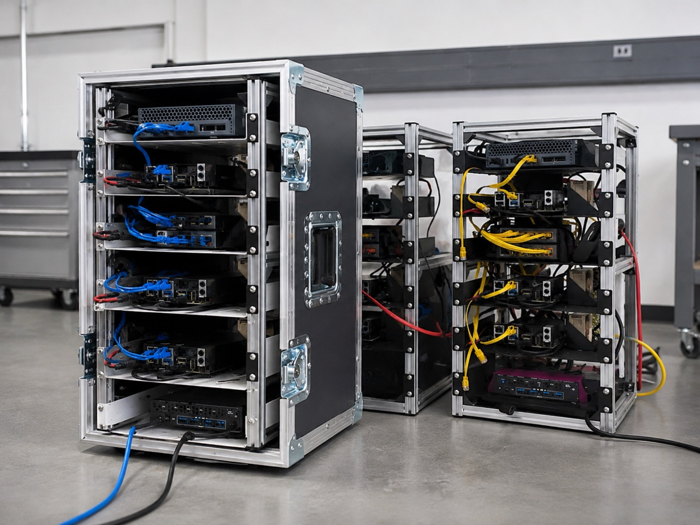
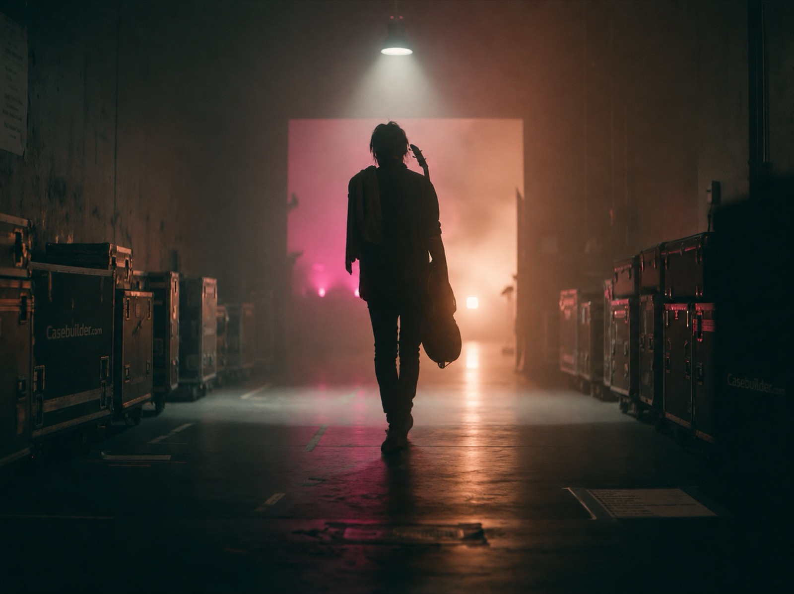
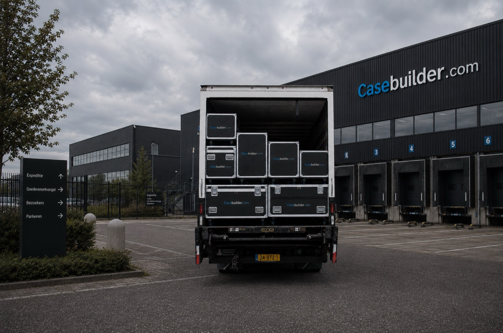
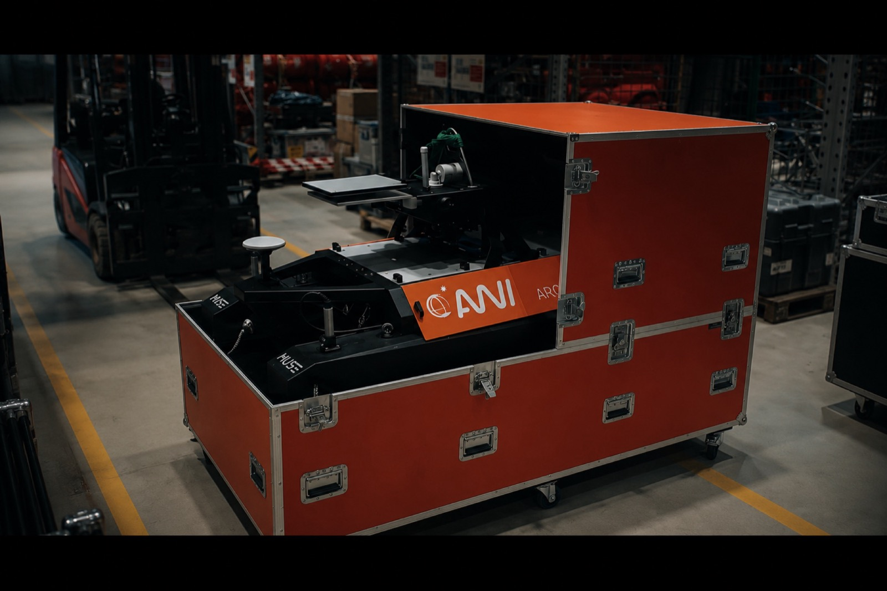
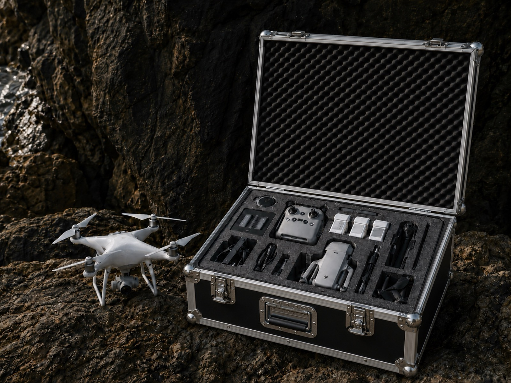
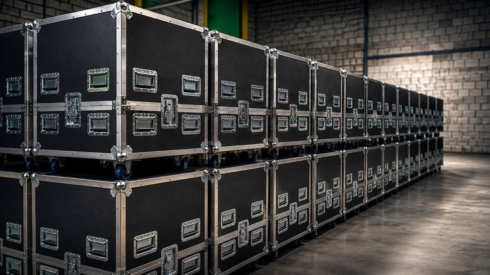

Sinds 1987 bouwen we in Doesburg cases voor apparatuur die niet stuk mag. Wat die apparatuur is, verschilt per markt — en daarmee de eisen, de normen en de manier waarop je bestelt.
Een case voor een spectrumanalyser is iets anders dan een case voor een moving head. Andere schokwaarden, ander schuim, andere keuring — en een andere route naar de bestelling.
Daarom staat hieronder per markt wat wij daar tegenkomen, en wat dat betekent voor de case die je nodig hebt.
Per markt de apparatuur die we het vaakst tegenkomen. Klik een apparaat om direct naar de bijbehorende case te gaan.

Machineonderdelen, prototypes en behuizing voor mobiele opstellingen. Seriematig, met een tekening vooraf en een vaste maatvoering per order.
Bekijk branche →
De markt waar we mee begonnen zijn. Cases die tien keer per jaar de vrachtwagen in en uit gaan, en dat vijf jaar moeten volhouden.
Bekijk branche →
Transport dat aan specificatie moet voldoen en dat aantoonbaar moet zijn. Materiaalkeuze, documentatie en keuring liggen vooraf vast.
Bekijk branche →
Meetinstrumenten die het veld in gaan: netbeheer, keuring, offshore. Het schuiminterieur is hier het product — gefreesd op het instrument, niet op de kist.
Bekijk branche →
Camera’s, multicam-sets en mobiele regie. Vaak te specifiek voor de configurator — meestal een tekening, soms een herhaalorder op een bestaand model.
Bekijk branche →
Maquettes, architectuurmodellen en presentatiestukken. Eenmalig, onvervangbaar en zelden rechthoekig — altijd volledig maatwerk.
Bekijk branche →Acht markten die we net zo goed bedienen, maar die nog geen eigen pagina hebben. Ze staan hier als rij omdat er nog geen verhaal achter zit — zodra dat er is, worden het tegels.
Standmateriaal, banners, displays en cateringkisten. Vaak bestelt een bureau namens de klant — de gebruiker zie je pas op de beursvloer.
33 klanten Bekijk branche →Servicekoffers en gereedschapinrichting voor de bus. Sluit aan op meet- en testapparatuur, alleen dan met een lager prijspunt.
25 klanten Bekijk branche →Serverracks, switchkoffers en datacentertransport. Rack247 draait hier al op — of dat een eigen merk wordt staat nog open.
31 klanten Bekijk branche →Endoscopie, demokoffers met inlay en laboratoriuminstrumenten. Hoogwaardig en kwetsbaar — de strategie noemt het apart om de marge.
premium marge Bekijk branche →Politie, brandweer en ambulance. Andere koper dan defensie: kortere lijnen, kleinere orders, geen aanbesteding.
— Bekijk branche →Componentcases voor raceteams en diagnoseapparatuur bij dealers. De enige branche die een vergelijkbare concurrent claimt.
— Bekijk branche →Tentoonstellingstransport en kunsthandel. Onduidelijk of er klanten zitten — de 71 in kunst en cultuur zijn vermoedelijk podia.
uitzoeken Bekijk branche →Bedrijfswagen- en camperinrichting. Van der Werf doet dit al als eigen specialisme.
— Bekijk branche →Welke route voor jou de snelste is, hangt af van wat je al weet. Op elke branchepagina staat de route die daar het vaakst gelopen wordt.
Je weet welke maat je nodig hebt en die zit tussen onze standaardmaten. Bestellen zoals je alles bestelt.
Vaakst gelopen bijJe weet je maten en wilt zelf bepalen hoe de case eruitziet. Direct een prijs, direct in productie.
Vaakst gelopen bijJe weet wat je hebt, niet wat je nodig hebt. Stuur een datasheet, een schets of een foto — wij tekenen het uit.
Vaakst gelopen bijDat zegt niets over of we het kunnen. De helft van wat we bouwen valt buiten deze zes — een pers in een kist op wielen, een trolley voor een pedicure, een kabelhaspel voor een windpark.
Stuur wat je hebt. Een datasheet is genoeg, een foto van een servet ook.